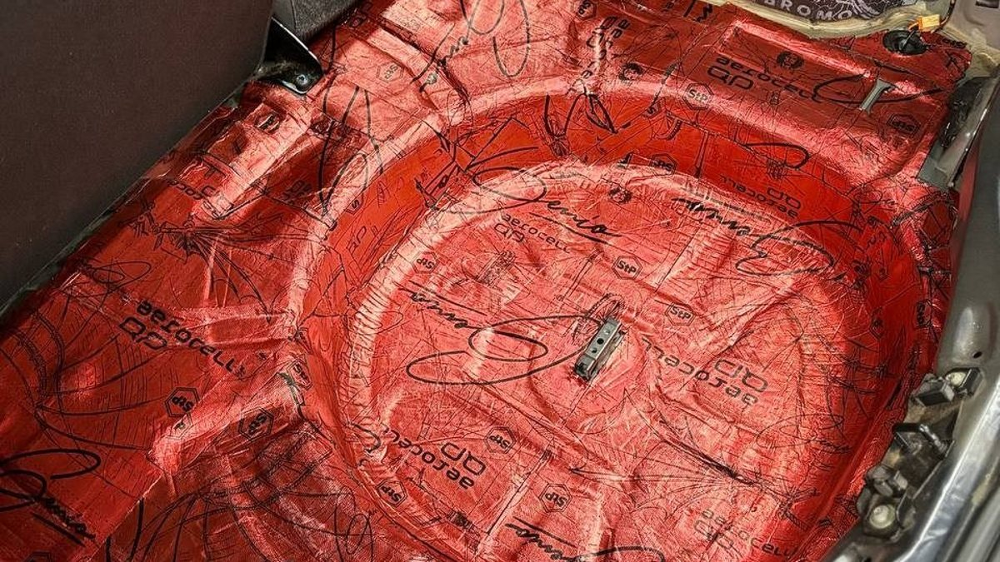
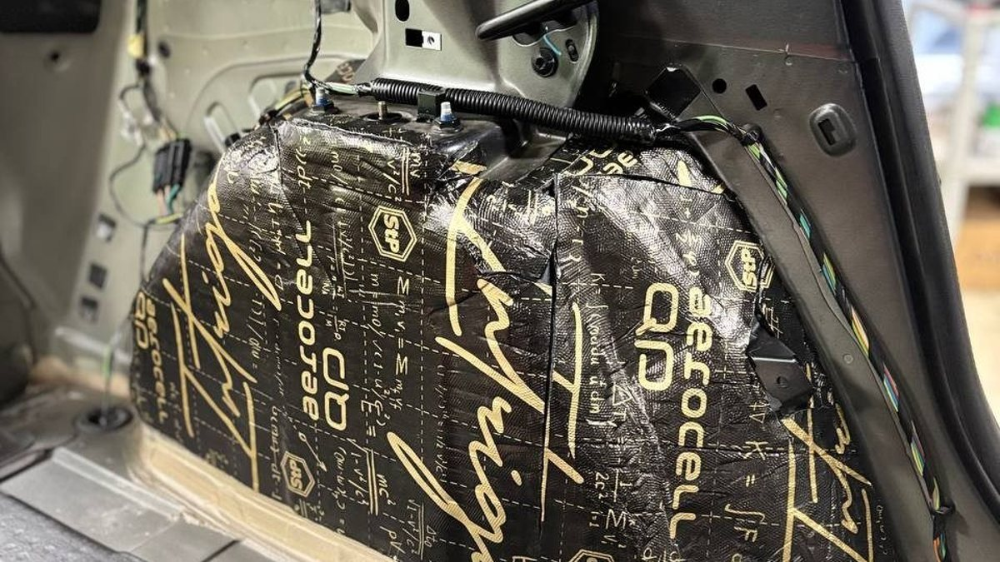

Ноябрь, Октябрьский мост, под колёсами каша из снега и реагента. Летом эту дорогу вы проезжали под тихую музыку, а теперь салон наполняет сухой треск шипов, и каждые несколько секунд по пластику под крылом что-то щёлкает, будто кто-то кидает горсть гравия в ведро. Сзади, из-под багажника, отвечает такое же шуршание. Машина та же, дорога та же, но ехать стало утомительно.
Шумоизоляция арок решает именно этот звук: шелест шин, удары песка и камней, плеск каши. Работает она снаружи, под подкрылками, и изнутри, со стороны салона и багажника. Дальше по порядку: как шум проходит через арку, какие бывают варианты, чем жидкая обработка отличается от листовой и где чаще всего ошибаются.

Колесо работает как источник сразу трёх звуков. Первый – сам протектор: шипы стучат по асфальту, ламели шуршат по мокрому. Второй – то, что летит из-под колеса: песок, мелкий щебень, ледяная крошка, вода с реагентом. Всё это с силой бьёт в подкрылок и в металл арки. Третий – вибрация, которая через подвеску уходит в кузов.
Дальше звук ищет самый короткий путь. Подкрылок из тонкого пластика звенит от каждого удара, как барабан. За ним стоит металл арки толщиной меньше миллиметра, и он тоже начинает резонировать. С внутренней стороны к арке примыкают пол у ног, стойки, ниши под сиденьями, а сзади – боковины багажника. У кроссоверов и хэтчбеков багажник открыт в салон, поэтому задние арки слышно буквально за спиной.
Отсюда понятно, почему зимой громче. Шипы добавляют стук, каша и реагент добавляют плеск, а замёрзший пластик подкрылка становится жёстче и звенит сильнее. Летом на гладком асфальте половины этих звуков просто нет.
Перед тем как что-то клеить, полезно убедиться, что источник действительно в арках. Несколько простых проверок на ярославских дорогах:
- Сухо и мокро. Проедьте один и тот же участок в сухую погоду и по каше. Если на мокром громче в разы, а на сухом терпимо, виноваты арки и то, что летит из-под колёс.
- Гравий и асфальт. На просёлке к даче или на подсыпанной песком дороге стук по подкрылкам слышен отчётливо. Если он резкий, звонкий, пластик подкрылка работает как барабан.
- Где громче. Пассажир сзади слышит больше, чем водитель? Значит, шумят задние арки и багажник.
- Скорость. Шелест шин растёт с каждым километром в час, а свист уплотнителей появляется резко после определённой скорости. Свист к аркам отношения не имеет.
Самый действенный этап – наружный. Его делают на снятых колёсах.
1. Снимают подкрылки и отмывают арку от грязи, песка и соли. В Ярославле к ноябрю там уже лежит слой реагента, и клеить поверх него бессмысленно.
2. Металл сушат и обезжиривают. Влажная или жирная поверхность не даст материалу держаться.
3. На металл арки клеят вибропоглотитель, рассчитанный на работу снаружи: с защитным слоем, стойкий к воде и морозу. Он гасит звон металла.
4. Подкрылок обрабатывают с внутренней стороны: тоже вибропоглотитель, чтобы пластик перестал звенеть, и поверх него шумопоглотитель, который не впитывает воду.
5. Подкрылок ставят на место на штатные крепления.
Если подкрылков с завода нет, а у многих машин задние арки голые, их стоит поставить. Без подкрылка металл арки принимает каждый камень напрямую, и никакая обработка изнутри этого не перекроет. Заодно подкрылок защищает краску арки от пескоструя.
Отдельный вариант – заменить пластиковые подкрылки на войлочные или обработать штатные мягким материалом. Ворс поглощает удары камней, а не отражает их, и звук из-под колёс становится глуше.
Внутренняя обработка идёт вместе с полом и багажником. Арка изнутри – это выпуклый кожух, который торчит в салон у ног задних пассажиров, под задними сиденьями и в боковинах багажника. Его закрывают так же, как остальной пол: вибропоглотитель на металл, поверх шумопоглотитель с закрытыми порами.
Изнутри обычно получается обработать не всю арку, а только доступные участки. Поэтому сама по себе внутренняя обработка даёт меньше, чем наружная. Самый заметный результат выходит, когда делают оба слоя защиты: снаружи гасят удары, изнутри добирают то, что прошло через металл.
Порядок важен и для бюджета. Если вас раздражает именно шелест и стук из-под колёс, начинают с наружной обработки всех четырёх арок. Если на трассе давит общий низкий гул, арки делают вместе с полом, потому что гул идёт через всю площадь днища, а не только через колёсные ниши.

Жидкая шумоизоляция арок – это густая мастика на основе каучука или битума, которую наносят распылителем на металл под подкрылками. Высыхая, она образует упругий слой, который гасит удары песка и защищает металл от коррозии.
Что у неё хорошо:
- ложится на сложную форму без швов, заходит в углы и на рёбра;
- защищает металл от пескоструя и реагентов, то есть работает ещё и как антикор;
- не отклеивается краем, как лист, если нанесена на чистую сухую поверхность.
Где её слабые места:
- слой тоньше и легче листового материала, поэтому звон большой панели гасит хуже;
- нужна сушка, наносить её на холодный и влажный металл нельзя;
- она не решает проблему звонкого пластикового подкрылка, его всё равно обрабатывают отдельно.
Практичный вариант для нашей зимы – комбинация: на металл арки жидкий состав как защита и первый слой, на подкрылок листовой материал. Так арка и защищена от соли, и стук камней заметно глуше.
В магазинах продают комплект для шумоизоляции арок: несколько листов вибропоглотителя, лист шумопоглотителя, иногда очиститель и ролик. Сделать арки самостоятельно можно, но там, где ошибаются чаще всего, ошибка проявится к весне.
- Не тот шумопоглотитель под подкрылком. Материал с открытыми порами впитывает воду с солью, как губка, тяжелеет и держит влагу у металла. Через сезон под ним ржавчина. Под подкрылок нужен материал с закрытыми порами или специальный уличный.
- Клей на грязь. Если не отмыть реагент и не просушить арку, лист отойдёт в первые же морозы и будет болтаться, задевая колесо.
- Лишняя толщина. Подкрылок с толстым слоем материала может касаться шины при полном повороте руля или на сжатии подвески. Проверяйте зазор, особенно с зимними колёсами.
- Саморезы в металл. Новые отверстия в арке без обработки – готовые очаги коррозии. Подкрылок крепят на штатные места.
- Забытые дренажи. В арках и порогах есть отверстия для стока воды. Закрытые материалом, они оставляют воду внутри.
Если вы не уверены в каком-то из пунктов, проще доверить арки мастеру, а самому взяться за то, где ошибка не стоит кузова, например за обработку подкрылка на верстаке.
Честно о пределах. Шипы остаются шипами: обработка приглушает их стук, но салон не станет таким, как летом на фрикционной резине. Свист на скорости идёт от уплотнителей и зеркал, а не от арок. Гул на трассе в основном живёт в полу. И если подкрылок треснул или держится на одном клипсе, его стук не уберёт никакой материал, сначала его чинят или меняют.
Какой эффект будет после арок? Пропадает звон от ударов песка и камней, шелест шин становится глуше и уходит на второй план. Насколько тише, зависит от машины, резины и того, что было с завода. Сравнить удобно приложением-шумомером на одном и том же участке дороги до и после.
Арки снаружи или изнутри – с чего начать? С наружной обработки: она перехватывает шум у источника. Изнутри арки обычно делают вместе с полом и багажником.
Хватит ли одной жидкой шумоизоляции арок? Против пескоструя и коррозии она хороша. Против звона пластика и металла сильнее работает листовой материал, поэтому их часто сочетают.
Машина новая, зачем трогать арки? На многих новых машинах обработка арок с завода скромная, а задних подкрылков может не быть вовсе. Это слышно уже в первую зиму на шипах.
Сколько стоит шумоизоляция арок автомобиля? Цену называют после осмотра. Она зависит от того, есть ли подкрылки, сколько арок делать, нужны ли новые подкрылки, какой материал и будет ли внутренняя обработка вместе с полом. Поэтому расчёт делают по конкретной машине.
Студия «Звук на Волге», Ярославль, проспект Октября, 82б. Пн–пт 8:30–20:00, сб–вс 10:00–19:00. Монтаж идёт вне зоны видимости клиента, поэтому мы делаем фотоотчёт каждого этапа и каждого слоя материала: вы увидите, что лежит под подкрылком и под обшивкой. Стоимость считаем по вашей машине и выбранным зонам.
Подробнее и запись: шумоизоляция арок и салона в Ярославле. Телефон +7 902 220-75-55, сообщения в ВК: vk.me/avtostil_yaroslavl.
Многие помнят нас как «Автостиль». Название мы обновили: раз весь день занимаемся звуком в Ярославле, теперь мы «Звук на Волге». Адрес прежний.